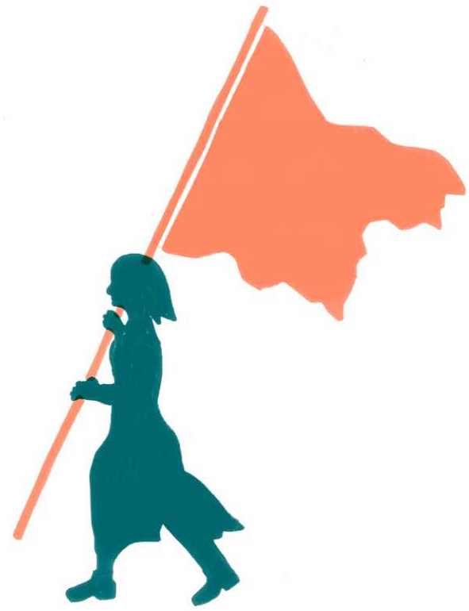

Co bude dál?
Dostali jste se až na samotný konec publikace Klimavize. Co nekončí s ní, je proces hledání strategií pro řešení klimatické krize, jehož byl náš výzkum malou součástí. Doufáme, že pro vás budou jeho závěry přínosné a pomohou vám klást si nové otázky, hledat na ně odpovědi a rozvinout nové formy aktivit, které nás všechny posunou zase o krok dál.
Výzvy, jimž klimatické hnutí čelí, jsou obrovské, ale i klimatické hnutí nabírá na síle. V České republice se v posledních letech rozvinula poměrně rozsáhlá a rozmanitá komunita lidí, která začíná přikládat klimatické a ekologické krizi patřičnou vážnost a hledat řešení, jež budou naléhavosti situace odpovídat. Podařilo se jí také dosáhnout některých významných úspěchů, především když vybojovala poměrně robustní shodu na ještě nedávno nepředstavitelně rychlém ústupu od těžby a spalování uhlí.
Vytvoření takové komunity, kterou dnešní české klimatické hnutí představuje, je nezbytný krok k tomu, aby se pro klimatickou akci podařilo získat i zbytek společnosti. V tomto smyslu jsme i na konci „první fáze“ stále na začátku. Hnutí nesmí ustrnout na dosavadních úspěších a musí dostat své aktivity, strategie a struktury na další úroveň. Do podoby, která mu umožní adaptovat se a překonávat nadcházející výzvy vyplývající ze souběhu potřeby rychlé dekarbonizace a adaptace společnosti na nastupující dopady krize v kontextu stále nejistějšího světa, rozpolceného masivními nerovnostmi i kulturními konflikty.
Zastřešujícím závěrem výzkumu proto je, že klimatické hnutí musí ve svých strukturách rozvíjet schopnost strategicky myslet a přizpůsobovat svou činnost měnícím se podmínkám. Části hnutí s velkými prostředky a kapacitami by měly podpořit ostatní, a pomoci tak rozvíjet kapacity celku (viz kapitola Klimatické hnutí a jeho strategie). Do strategických diskuzí je zapotřebí zapojit i méně formální skupiny a více „vnější“ vrstvy mimo hlavní centra, má-li se hnutí dále rozvíjet a být schopné aktivizovat více lidí.
Doufáme, že takovému myšlení může pomoci také následujících šest principů kopírujících hlavní kapitoly naší publikace:
- Klimatická krize je systémový problém. Není možné řešit jej jen technicky, protože je hluboce zakořeněn v dominantních strukturách a mentálních modelech dnešní růstově orientované ekonomiky a společnosti. Klimatické hnutí musí uvažovat systémově a snažit se tyto instituce transformovat.
- Klimatická krize je průřezové téma. Prostupuje všemi aspekty života společnosti. Není to pouze téma „ochrany přírody“. K jejímu řešení je proto potřeba klimatický (a širší ekologický) mainstreaming, kdy se ohled na ni promítne do všech sektorů. Klimatické hnutí musí překonávat „resortismus“ – tendenci škatulkovat svět do oddělených sfér – a prosazovat holistickou, všeobjímající transformaci.
- Klimatická krize je otázka moci. Mocenské dynamiky společnosti v ní mají stejný význam jako fyzika atmosféry. Zásadní překážkou řešení krize jsou partikulární mocenské zájmy, které těží z jejího prohlubování. Chce-li ji klimatické hnutí překonat, musí tento mocenský rozměr odhalovat, budovat vlastní sílu ve společnosti a demokratizovat moc tak, aby veřejný zájem znovu převážil nad soukromým.
- Klimatická krize je otázka spravedlnosti. Příčiny i dopady, náklady mitigace i možnosti adaptace jsou rozloženy krajně nerovnoměrně a nespravedlivě. Chce-li klimatické hnutí získat podporu pro své návrhy, musí usilovat o transformaci, která bude spravedlivá, bude řešit více problémů současně a povede k ekonomice více zaměřené nejen na ekologickou udržitelnost, ale i na potřeby lidí.
- Klimatické hnutí potřebuje hledat spojenectví. Udržovat, budovat a rozšiřovat vlastní struktury je nezbytné, ale nestačí to. Chce-li hnutí mobilizovat i zbytek společnosti, potřebuje nová spojenectví s dalšími jejími složkami. Klíčové jsou instituce s velkým vlivem, jako jsou církve, odbory i byznys. Je zapotřebí najít spojence pro jednotlivé pákové body nejdůležitějších změn a najít s nimi společnou řeč.
- Klimatické hnutí potřebuje měnit instituce. Pro řešení klimatické krize bude klíčové působení veřejných institucí, od lokální a regionální úrovně přes národní až po evropskou úroveň. Schopnost zejména národních institucí na krizi reagovat je dnes tristní. Chce-li klimatické hnutí transformovat společnost a dostat své návrhy do praxe, bude muset najít sílu a cesty k tomu, transformovat také samotný veřejný sektor.
Odpověď, kterou klimatické hnutí na tyto výzvy najde, je již také na vás. Tyto problémy mohou být odrazovým můstkem pro další diskuze, plánovací procesy a návrhy, jež nás mohou k jejich překonání posunout. Pomoci vám v tom mohou nástroje a doporučení v kapitole Jak na vlastní strategii, stejně jako externí facilitátorky a facilitátoři, kteří vám mohou pomoci s plánováním (kontakty na ně najdete tamtéž). Budeme k nim patřit i my jakožto pracovní skupina „Klimavize“, protože na výzkum a jeho publikaci chceme navázat také strategickými workshopy právě s jednotlivými aktéry klimatického hnutí.
Máme radost, že jste dočetli až sem. Přejeme vám všem hodně štěstí a pevné nervy při strategických plánováních, sousedských setkáních, demonstracích, schůzkách, stávkách, jednáních se spojenci, blokádách a všude tam, kde se zachraňuje svět. Tak na brzkou shledanou!
